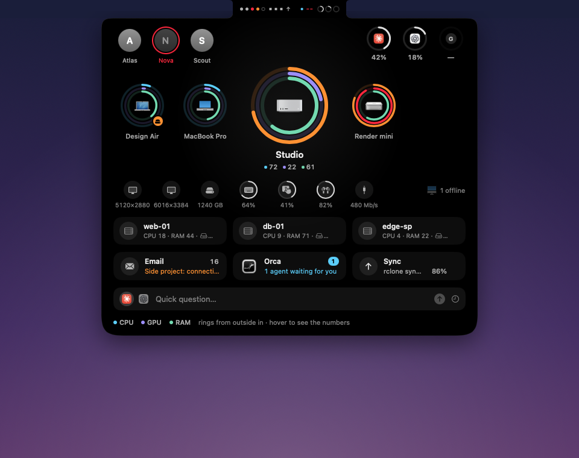
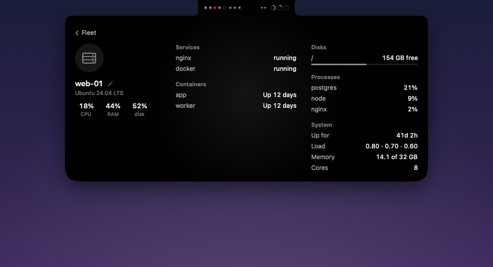
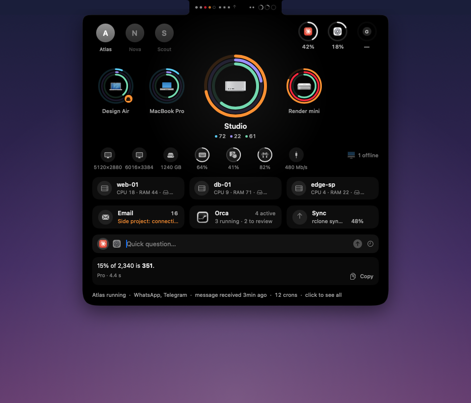
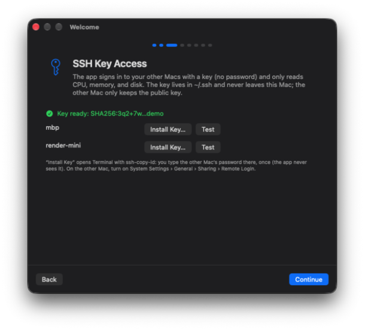
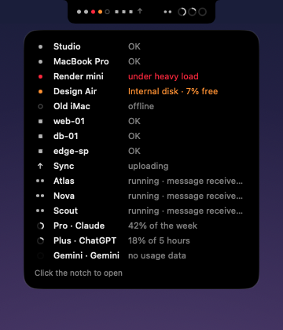

Everything you run. Nothing you don't need.
Notch apps show your music. Monitoring apps show one Mac in a wall of graphs. FleetNotch answers one question: is everything I run OK right now?
Every Mac you own, nothing installed on them
Found on Tailscale, read over SSH with a key. CPU, GPU and memory as Apple Watch–style rings, disks, temperature, and everything plugged in, from displays to AirPods battery.

Linux servers, too
A POSIX shell probe for your VPSs: CPU, RAM, disks, load, the systemd services you pick and your Docker containers.

Agents, subscriptions and a quick ask
Hermes, OpenClaw or any agent with a health URL, each with its own photo. Claude and ChatGPT usage as rings. Press ⌃⌥Space to ask a quick question, answered by the CLI you are already signed in to, with every tool disabled.

Native settings, a guided first run
A real macOS Settings window. With no config, an assistant finds your Macs, explains the SSH key and installs it (you type the remote password in Terminal, once).

A legend when you need it
Hover the notch and every dot, square, arrow, eye and ring gets a name and a state. The notch itself stays clean.

Read-only by design.
No server, no telemetry, no account. The only network calls are the ones you configure.
✓Nothing installed
Probes go through SSH stdin and leave nothing behind. No sudo.
✓Secrets in the Keychain
Never in the config file, never on a command line.
✓Headers, not bodies
Email shows unread counts and the latest sender and subject. The body is never requested.
✓Agents untouched
Status only. Never restarted, never messaged.
✓Sandboxed quick ask
Empty temp folder, no tools, no files, 90-second timeout.
✓Light on your Mac
A thin native shell (about 0.02% of a core when idle) over a stdlib-only Python collector (about 0.1–0.2%).
Install in one line.
git clone https://github.com/bisnishub/fleetnotch && cd fleetnotch && ./install.sh
Built from source on your Mac with the Command Line Tools: nothing to notarize, nothing for Gatekeeper to block.
macOS 14 or later. Optional: Tailscale, Remote Login on your other Macs, a Composio key for email, Claude Code or Codex for the quick ask.